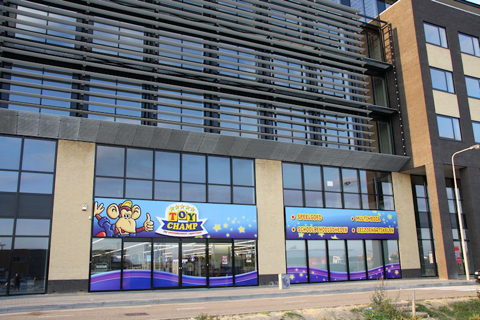

Speciaal voor deze wedstrijd roepen we de hulp van de Heilige Maagd Maria
in.

En zo staat het hotel letterlijk voor aap.
Oh wow, een ware catfight. Man met ruitjestrui kalmeert hooded girl na
heftig contact met zwartgerokte dame met (te) grote tas.
De sfeer is van meet af aan top!
Oost.
Geloof, hoop, passie...
Vandenbussche EN kAH.
Roda speelt energiek, gedreven, ja herboren!
Gedurende de eerste dertig minuten domineert Roda JC. De schaarse uitvallen
van Heerenveen zijn echter levensgevaarlijk.
Double-trouble.
De Fauw passt op Oper die met een hakje fraai intikt. Helaas buitenspel.

Een voorzet van Beerens bereikt Grindheim die inkopt: 0-1, (37').
Cissé werkt een bal van Hadouir in de touwen: 1-1, (61').
Hadouir is er een tijdje uitgeweest. Deze kramp is een voorteken van een
aanstaande wissel.
Roda dendert door en Bodor scoort 2-1, (80').
Smarason (nummer 31): 2-2, (87'). Dit doet pijn...
Believe it or not, maar dit is pica 666 van mijn nieuwe cam...
Opa neemt een loopje met de regels...
Alfa-team Thull en omstreken...
Roda-girls for-ever !!!
Hey...Monique.. nasty girl ....
Willem Janssen met Treebeek.
Kelly nam enkele vriendjes mee.
Deze is voor Ruud en hij weet zelf waarom...